Charpente et menuiserie à Masevaux, depuis 1987
Charpente, escaliers et agencement en bois massif
Une entreprise familiale de la vallée de la Doller : nous dessinons, fabriquons à l'atelier et posons chez vous, de la charpente aux placards.
Demander un devisVoir nos chantiers
- Chantier
- Menuiserie Wehrlé
- Atelier
- 9 rue des Scieries, Masevaux
- Équipe
- 6 personnes
- Bois
- sapin, épicéa, chêne, hêtre
- Devis
- gratuit, après visite
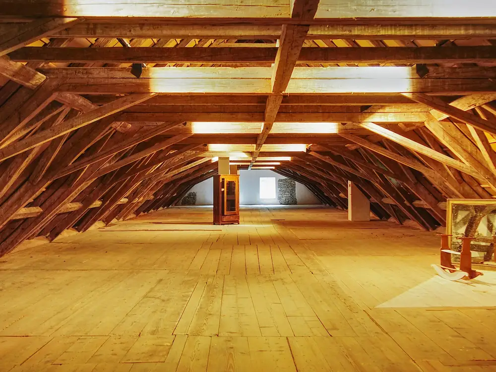
Nos métiers
Nous dessinons, fabriquons à l'atelier et posons chez vous. Le délai indiqué court de la signature du devis à la pose.
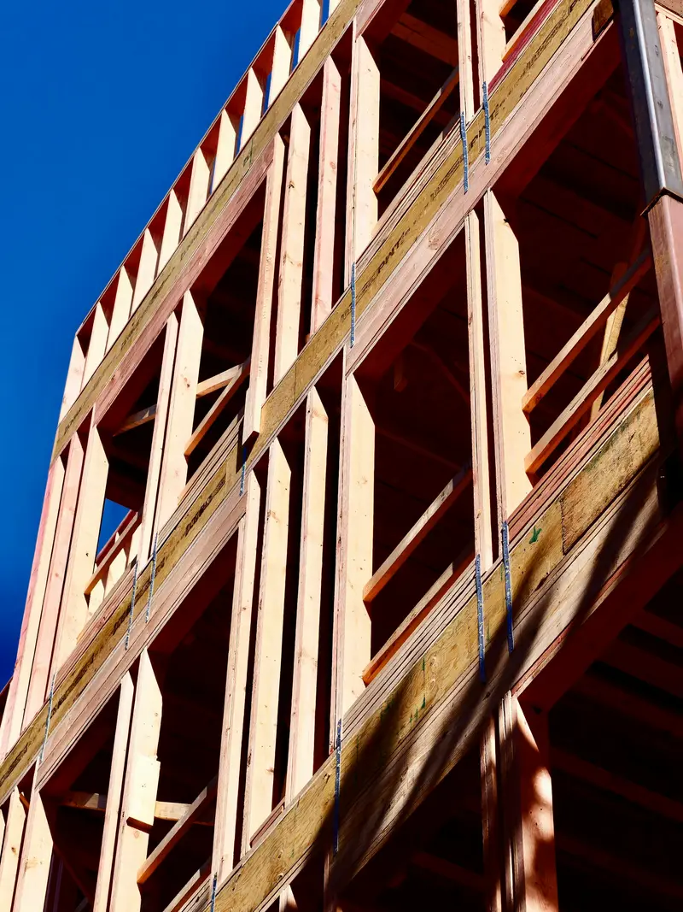
Délai habituel : 2 à 4 mois
Charpente
Charpente traditionnelle et ossature bois, en neuf comme en rénovation.
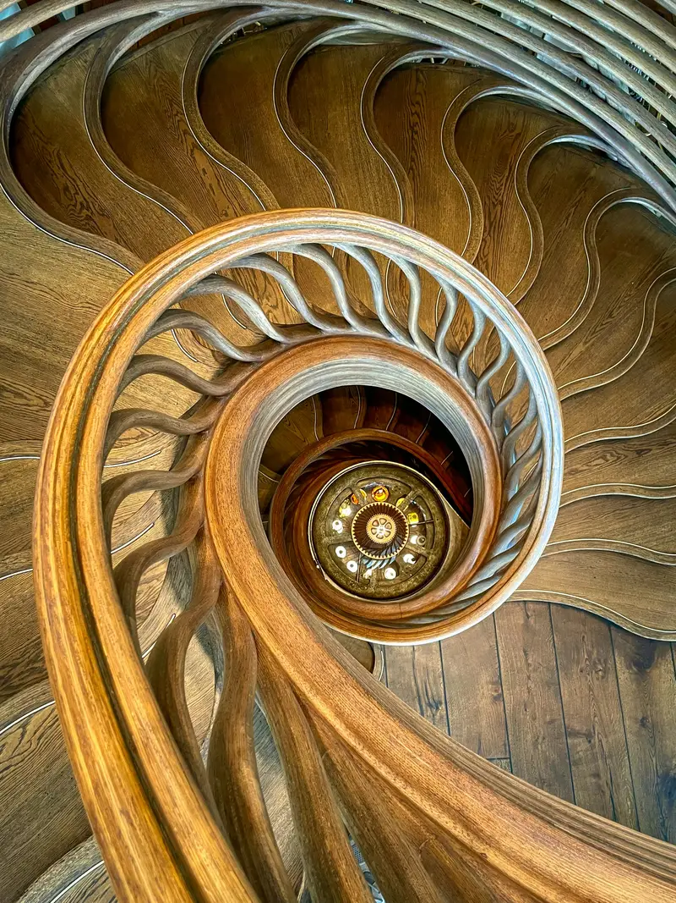
Délai habituel : 6 à 10 semaines
Menuiserie
Escaliers, portes et fenêtres en bois, fabriqués dans notre atelier.
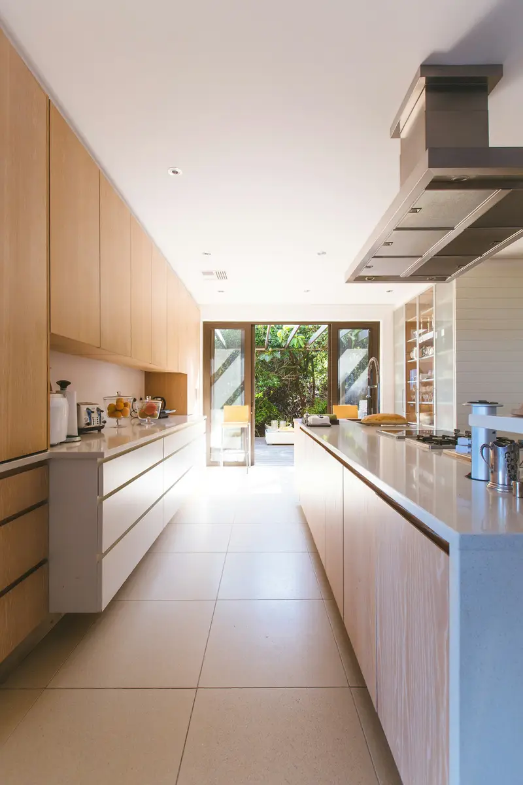
Délai habituel : 6 à 10 semaines
Agencement
Cuisines, dressings et bibliothèques, dessinés pour votre intérieur.
Chantiers récents
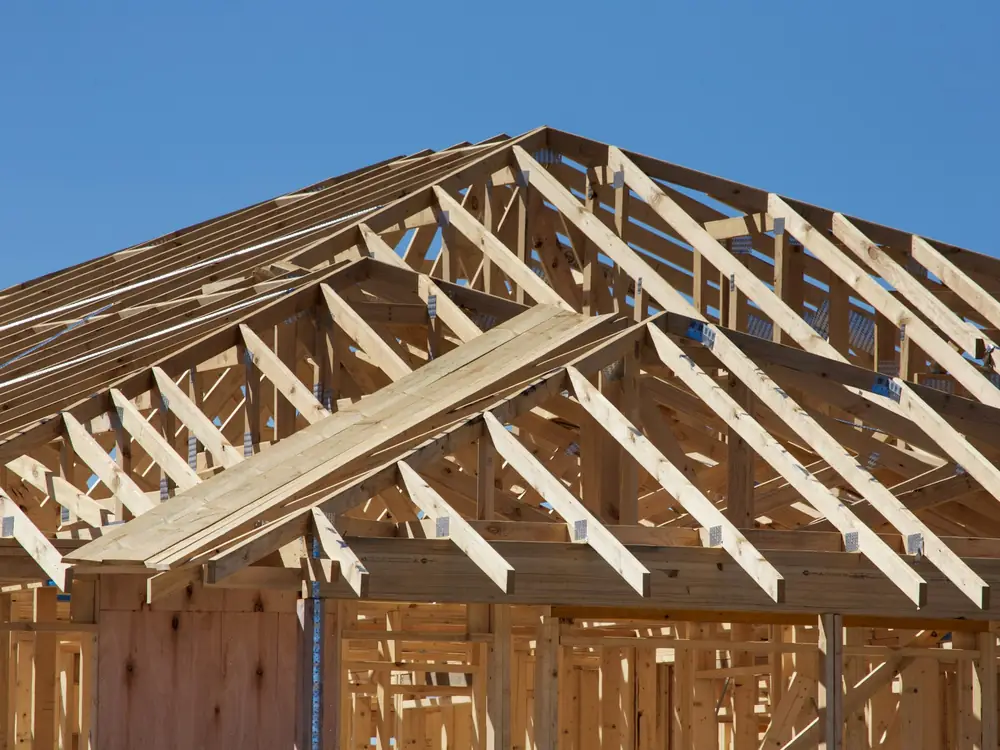
- Chantier
Charpente d'une maison neuve
- Lieu
- Burnhaupt-le-Haut
- Bois
- Sapin des Vosges
- Durée
- 2 jours de levage
Charpente en sapin des Vosges, taillée à l'atelier et levée en deux jours.
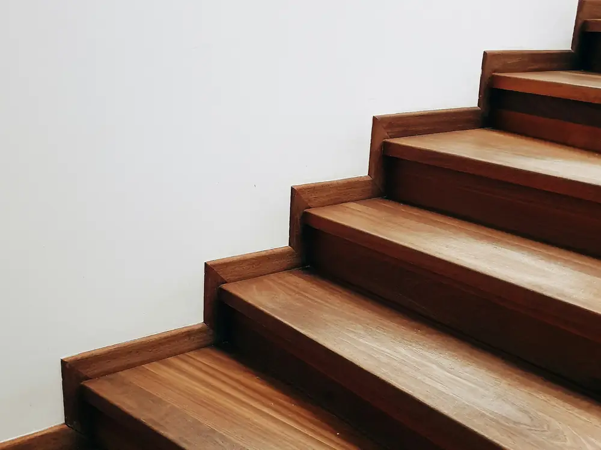
- Chantier
Escalier en chêne massif
- Lieu
- Maison de village, Sentheim
- Bois
- Chêne
- Durée
- 3 semaines
Escalier droit, marches de 40 mm, finition à l'huile naturelle.
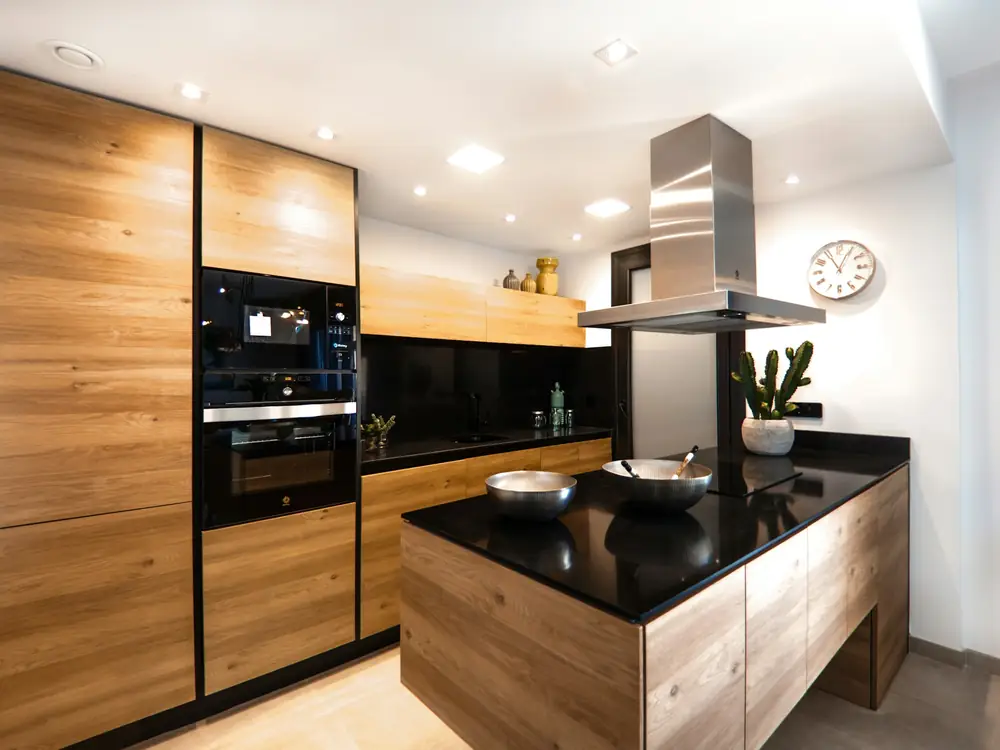
- Chantier
Cuisine sur mesure
- Lieu
- Appartement, Thann
- Bois
- Chêne
- Durée
- 6 semaines
Façades en chêne, colonne four et îlot central.
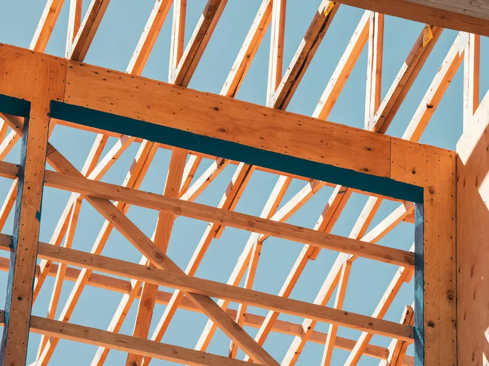
- Chantier
Extension à ossature bois
- Lieu
- Maison, Cernay
- Bois
- Épicéa
- Durée
- 5 semaines
Extension de 30 m², ossature et charpente fournies et posées.
L'atelier
Depuis 1987, l'entreprise Wehrlé taille ses charpentes et fabrique ses menuiseries dans son atelier de Masevaux.
Nous travaillons surtout le sapin et l'épicéa des Vosges, le chêne et le hêtre, achetés à des scieries de la région.
Une visite sur place avant chaque devis, une équipe de six personnes et le même interlocuteur du premier rendez-vous à la fin du chantier.
- Années d'expérience
- 38
- Personnes dans l'équipe
- 6
- Km autour de Masevaux
- 40
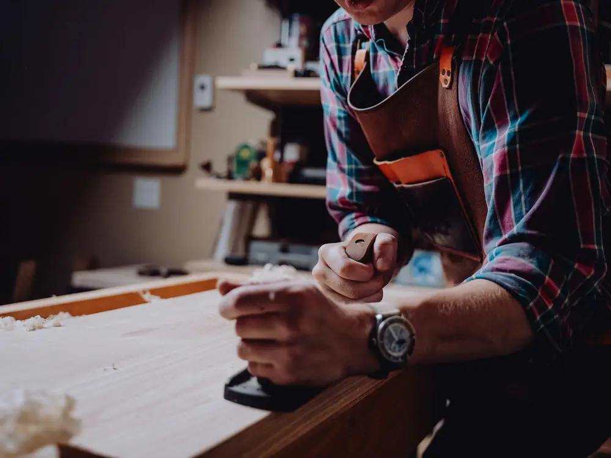
À l'atelier
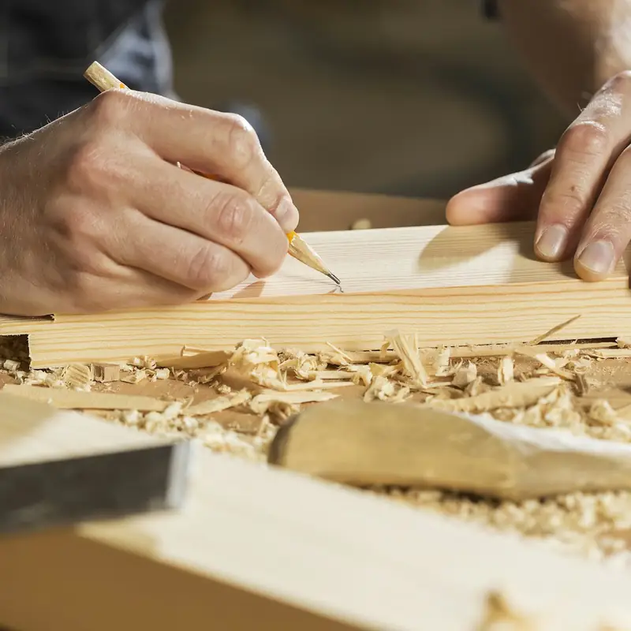
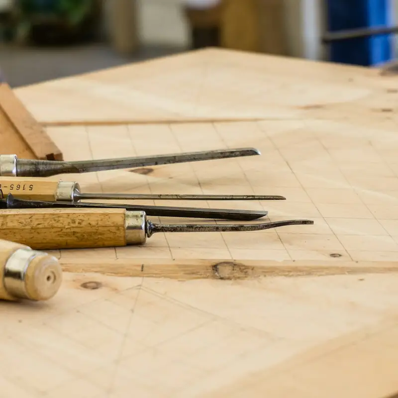
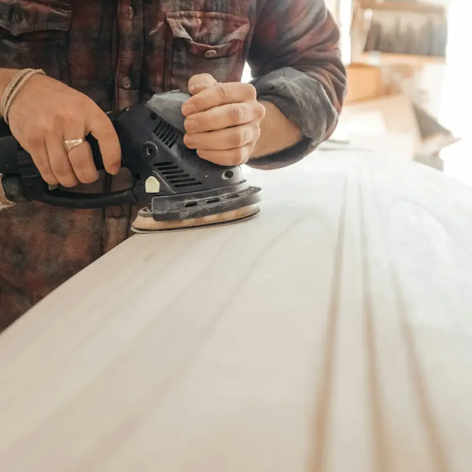
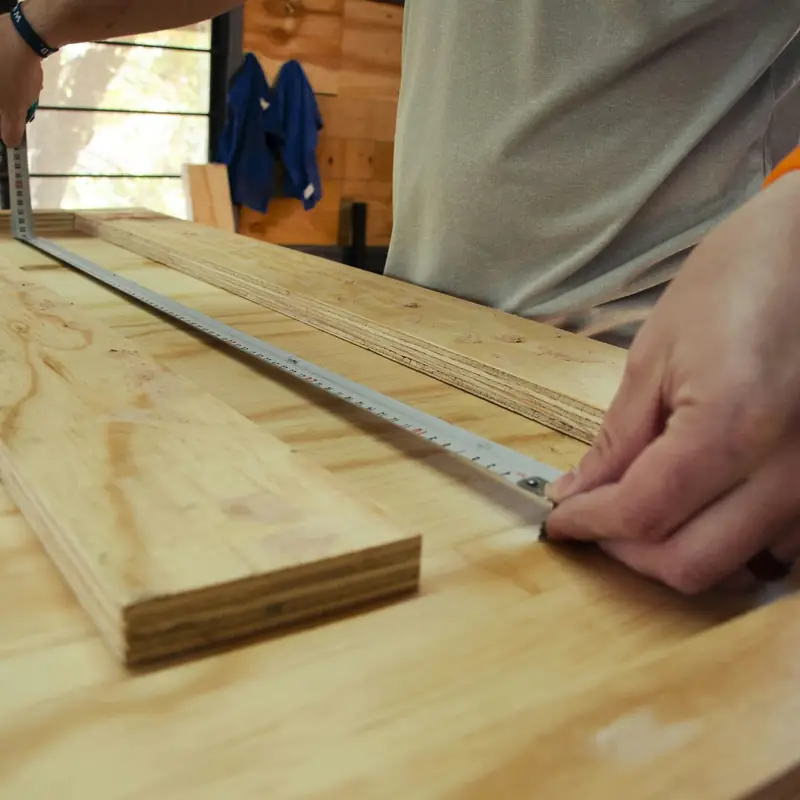
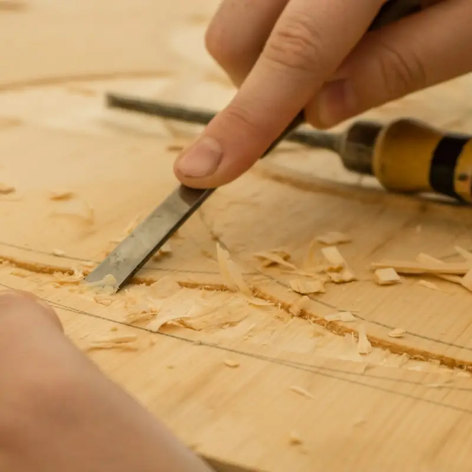
Zone d'intervention
Nous intervenons dans la vallée de la Doller et dans un rayon de 40 km autour de Masevaux.
- Masevaux
- Sentheim
- Burnhaupt
- Thann
- Cernay
- Mulhouse
- Belfort
- Giromagny
Ils nous recommandent
4,9
58 avis sur Google
Frédéric L. Escalier en chêne posé dans le délai annoncé au devis. Chantier laissé propre chaque soir, finitions impeccables.
Nadia E. Rénovation de la charpente de notre corps de ferme : explications claires, devis détaillé et respecté au centime près.
Bernard H. Bibliothèque sur mesure sous les combles, on en profite tous les jours. Une équipe à l'écoute et de bon conseil.
Les avis les mieux notés, du plus récent au plus ancien. Avis publiés sur Google par leurs auteurs, sans contrôle de notre part.
Avis imaginaires, comme l'entreprise. Sur le site d'un client, ses derniers avis Google s'affichent ici et se mettent à jour tout seuls.
Questions fréquentes
Le devis est-il gratuit ?
Oui. Nous venons voir le chantier, prenons les mesures et vous envoyons un devis détaillé sous dix jours.
Quels délais faut-il prévoir ?
Pour une charpente, comptez deux à quatre mois entre la signature et la pose. Pour un escalier ou un agencement, six à dix semaines.
Êtes-vous assurés ?
Oui. L'attestation d'assurance décennale est jointe à chaque devis.
Horaires et accès
13 h – 17 h
- 9 rue des Scieries
68290 Masevaux - 03 53 01 64 90
- devis@menuiserie-wehrle.example
- Itinéraire